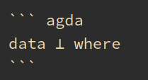

A namespace in Agda, called a module, appears at the beginning of every file:
module Lang.intro whereFilenames and module headers are required to match. The supported filenames that can contain the module intro being:
This file is written in markdown and hence we use the name intro.lagda.md.
The last three file extensions above are part of what’s called “literate programming” wherein one can write markdown or latex documents with agda code surrounded in code blocks marked agda, similar to how this page itself is written!

The Agda compiler can then validate the agda code inside the agda code blocks, thus guaranteeing the correctness of the math in the documents.
There are a host of other high quality material on the web, though all of them might not be beginner friendly. They are listed in Agda’s official documentation. We flick some stuff from many of them and water them down for novices here.